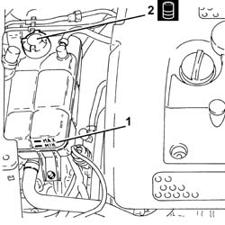
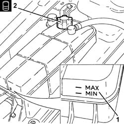
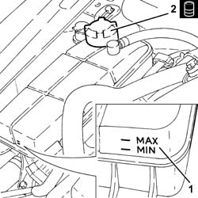
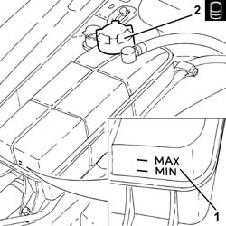

0010T21 COOLANT CHECK DENSITY AND TOP UP IF NECESSARY
- Path
- Procedures > 00 MAINTENANCE > 0010 UNITA' NUOVE E MANUT. PROGRAMMATA > 0010T VEHICLE OIL AND FLUIDS > 0010T21 COOLANT CHECK DENSITY AND TOP UP IF NECESSARY
- Kind
- repair procedure (removal / refitting; the operation number is the code)
- Applies to
- all engines; all production periods
- Interactive page
- https://sloeber94.github.io/elrnDB-aGt/en/#/125000837
Applies to: engines: 2.0 JTS; all production periods
.
1. Check the coolant level in the reservoir is between the MIN and MAX marks shown on the reservoir.
2. If the level is too low, unscrew the engine coolant reservoir cap and top up with the specified fluid to the MAX mark.
Type | Component | Description | Qty. | |
|---|---|---|---|---|
2 | Fluid [I] | ENGINE COOLING CIRCUIT | 50% Paraflu11 mixture for Alfa Romeo/dist water | 7.2 |

Applies to: engines: 3.2 V6; all production periods
.
1. Check the coolant level in the reservoir is between the MIN and MAX marks shown on the reservoir.
2. If the level is too low, unscrew the engine coolant reservoir cap and top up with the specified fluid to the MAX mark.
Type | Component | Description | Qty. | |
|---|---|---|---|---|
2 | Fluid [I] | ENGINE COOLING CIRCUIT | 50% Paraflu11 mixture for Alfa Romeo/dist water | 9.2 |

Applies to: engines: 1.9 JTD 16V; all production periods
.
1. Check the coolant level in the reservoir is between the MIN and MAX marks shown on the reservoir.
2. If the level is too low, unscrew the engine coolant reservoir cap and top up with the specified fluid to the MAX mark.
Type | Component | Description | Qty. | |
|---|---|---|---|---|
2 | Fluid [I] | ENGINE COOLING CIRCUIT | 50% Paraflu11 mixture for Alfa Romeo/dist water | 7.2 |

Applies to: engines: 1.8 T.SPARK; all production periods
- Check the coolant level in the reservoir is between the MIN and MAX marks shown on the reservoir.
- If the level is too low, unscrew the engine coolant reservoir cap and top up with the specified fluid to the MAX mark.
Type | Component | Description | Qty. | |
|---|---|---|---|---|
Fluid [I] | ENGINE COOLING CIRCUIT | 50% mixture PARAFLU UP/distilled water | 7.2 |
